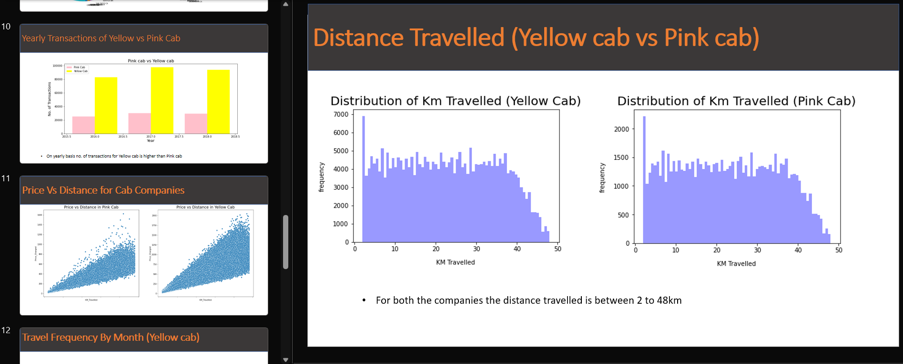
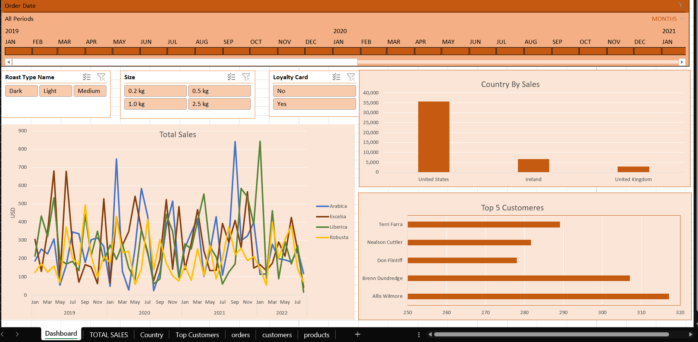
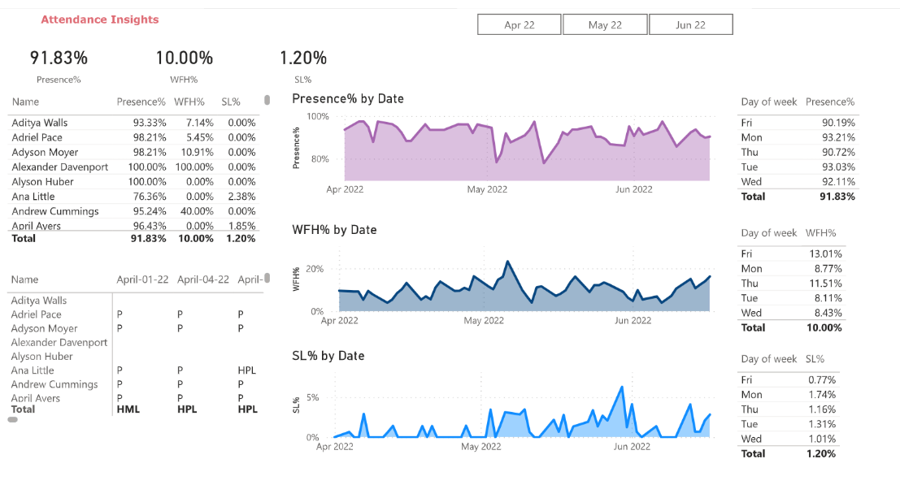
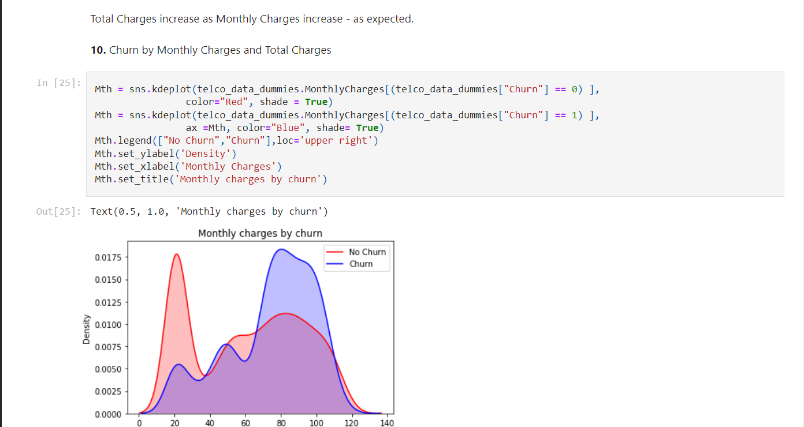
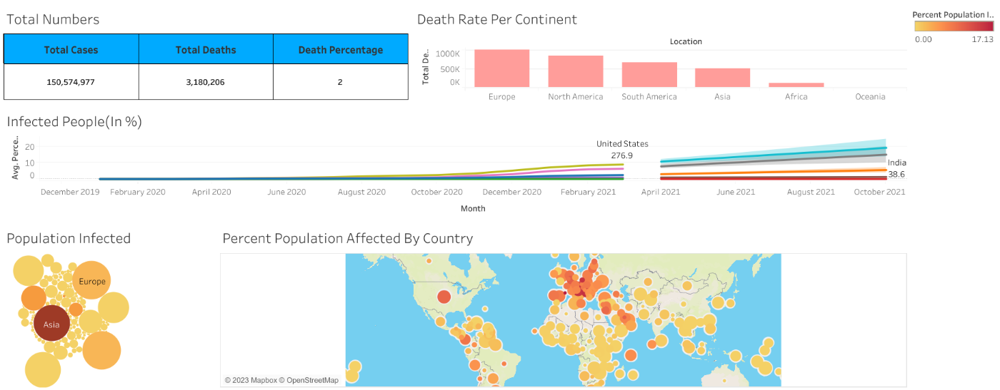
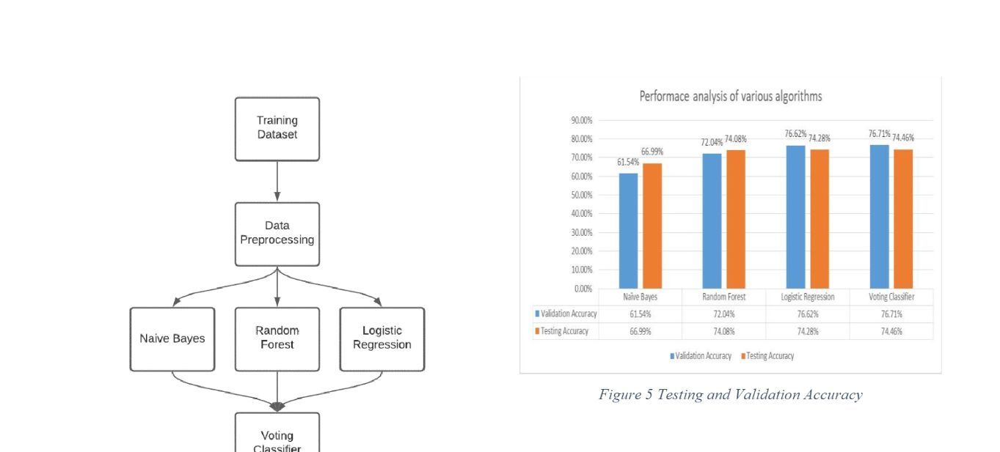

In this comprehensive analysis, I use Excel for data cleaning and modeling, while EDA acts as the compass guiding us to actionable insights. The analysis is further presented in detail using PowerPoint presentation that will decisively showcase which cab company stands out as the superior investment option.


The transformation of raw data and concluding with the creation of a dynamic and interactive dashboard. The project aimed to showcase my proficiency in manipulating data using essential Excel functions such as XLOOKUP, INDEX, and Pivot table.
.png)
In this project, I've used Power BI to analyze data from Spotify Charts. The primary objectives are to extract actionable business insights, conduct essential data transformations, generate informative tables, and culminate in the creation of an engaging and visually striking dashboard.

In this project, I present a comprehensive overview of how the data is transformed, and analyzed of employee attendance over a three-month period. My goal is to create meaningful metrics and visualizations, providing a valuable resource for workforce management decisions.

In this customer churn analysis project, my initial focus is on understanding, cleaning, and conducting exploratory data analysis (EDA) on the available dataset. This project lays the foundation for identifying patterns and insights related to customer churn.

In this project, I've utilized SQL to conduct thorough data exploration, analyzing and extracting valuable insights from the dataset. Additionally, I will be leveraging Tableau to create compelling visualizations that effectively communicate the findings and patterns uncovered through the data analysis.

Social media monitoring can relate to either gauging thoughts about current events, often known as sentiment analysis, or detecting emotions in created material. The phrase sentiment analysis refers to the automated method of recognising and categorizing text based on the views expressed in it. The technique focuses solely on the examination of the attitude of the individual who gave the material, which is classified as positive, negative, or neutral.